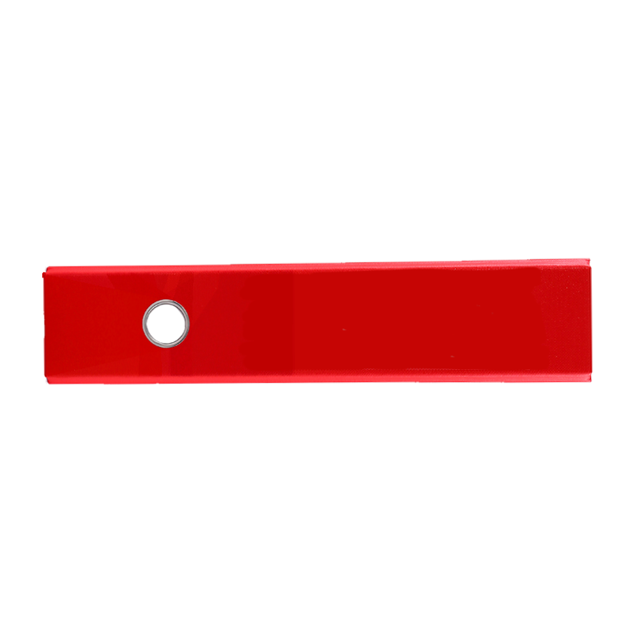
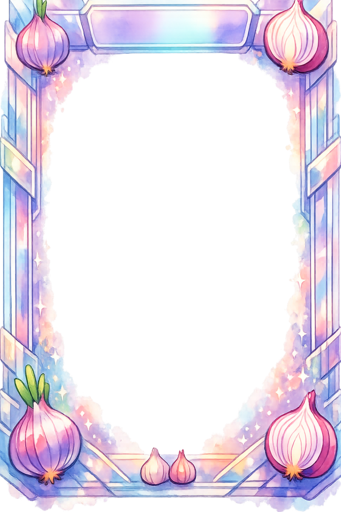

Blinder Mode
Por: @ArtistaBroski
"Un rediseño épico del Blinder con detalles visuales para el servidor."

Burro Legendario
Por: @QuesoFan
"El burro en su máxima expresión de poder y carisma."

Espacio Reservado
Por: Tu Nombre Aquí
"¡Envía tu arte a través de nuestras redes para aparecer en la colección!"